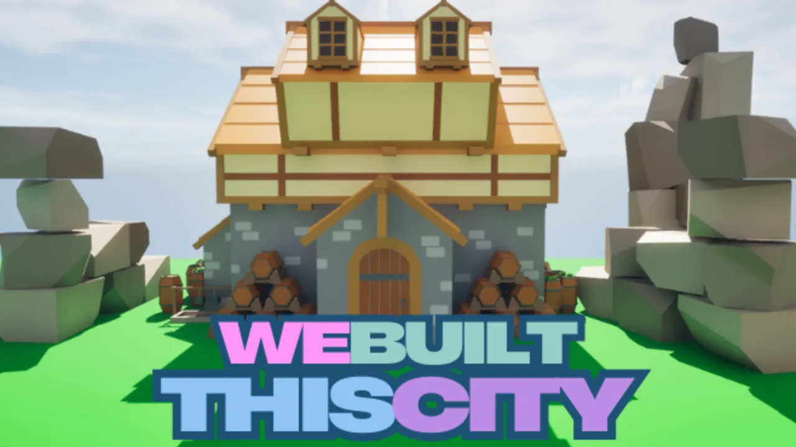
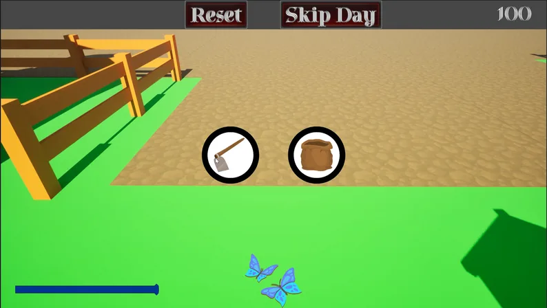
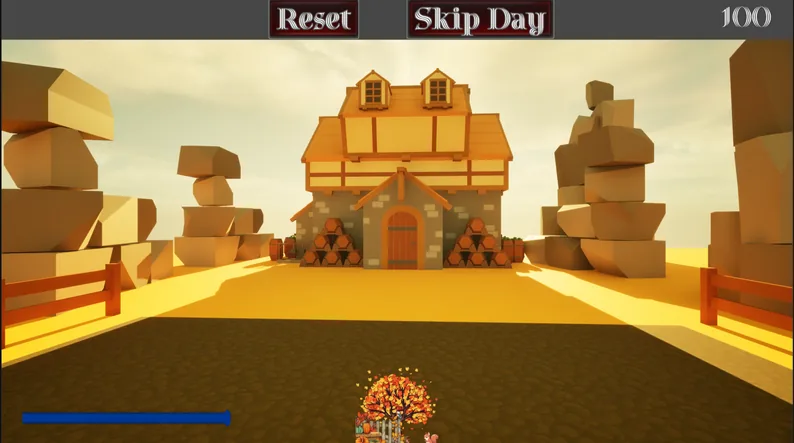

We Built This City: Farmer Edition
Rome might not have been built in a day, but it certainly wasn't built on an empty stomach.
At a Glance
Life on the Farm
Plant, tend, harvest and sell. Keep the village fed and your coffers full.
Grow
Three food groups, each with at least three different crops to plant and tend.
Harvest
Work the fields through the seasons and bring in the harvest when it's ready.
Sell
Sell your food into a balanced economy, and learn what's worth planting and when.
Skip Ahead
Skip the day when you're ready to move on, or reset and try a new plan.
A Year in an Hour
All four seasons and a full day/night cycle. One hour of play takes you through an entire year.

Work the land
Grab your tools, choose your plots and get growing. Fences, fields and the open sky are yours to tend.

Golden hours
Watch the light change as the days roll by, from bright mornings to warm sunsets over the farmhouse.
The Big Plan
Farmer Edition is part of a multi-game project to simulate every important role in a typical high-fantasy medieval village. Every village starts with a farmer.
Take a Look
Giving Back
15% of everything We Built This City makes after platform cuts goes to the IGDA Foundation, sent at the end of every month. Every village starts with someone willing to build it, so this one gives back to the people helping new game developers find their footing. Here is every cent: what came in, what I gave, and what I kept.
Help build the village
Farmer Edition is the first piece of a bigger village. Follow along on the devlogs and socials as the rest of the town gets built, one role at a time.